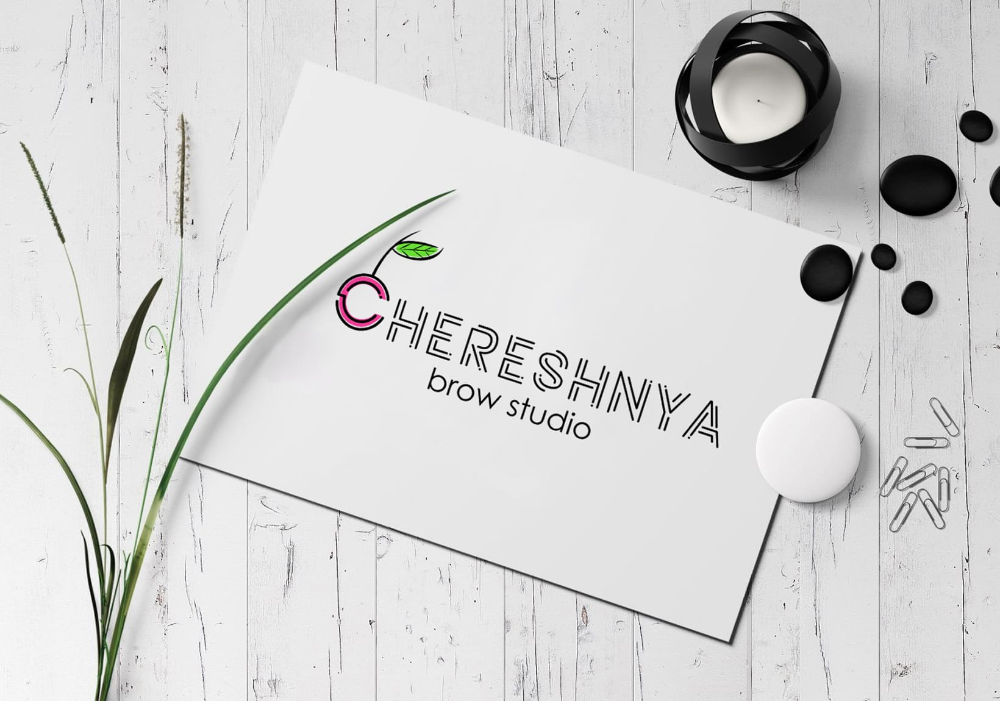

Мысль, которая не дает мне покоя 😣, и постоянно всплывает в голове. Она основана на прочитанной статье 🗒, в которой автор одного американского журнала - Малкольм Гладуэлл, взялся доказать, что люди не рождаются гениями, а становятся ими в результате упорных занятий любимым❗️ делом.
🔷 Также разные группы психологов проводили исследования 📈, в которых выясняли у одаренных детей 🤾♀️🤸♀️, сколько часов в неделю они занимаются своим делом, и вывели закономерность, что у лучших дарований к 20 годам набралось до 10 000 часов занятий ⏳. Это касалось совершенно разных областей - и музыки 🎼, и спорта🏅

🔶 Невролог Даниэль Левитин написал: "Из многочисленных исследований вырисовывается следующая картина: о какой бы области ни шла речь, для достижения уровня мастерства, соразмерного со статусом эксперта мирового класса 👨🏫🏆, требуется 10 000 часов практики.
Кого ни возьми - композиторов 🎶, баскетболистов 🏀, писателей 📖, дизайнеров 👩🏼🎨 , пианистов 🎹, шахматистов ♟, отпетых уголовников, и так далее... 10 000 часов - примерно три часа практики в день, или 20 часов в неделю на протяжении 10 лет 🗓".
🔷 Психолог Майкл Хоув написал, что в ранних произведениях Моцарта 🎼 по сравнению с работами зрелых композиторов, не было ничего выдающегося. Все - волшебные 10 000 часов и упорство 💪. Сильно?
То есть мы можем добиться того самого профессионализма, и сейчас есть тысячи примеров того, как другие приходят к этому. Главное - правильно ответить себе на ❓: ради чего я готов потратить эти годы. - Я уже ответила себе на него😌